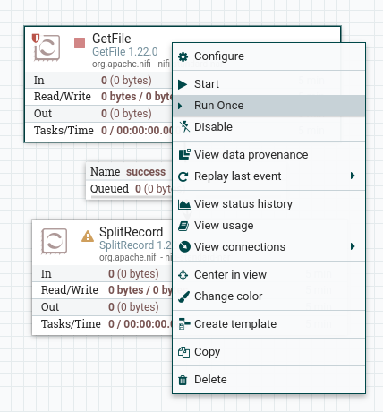
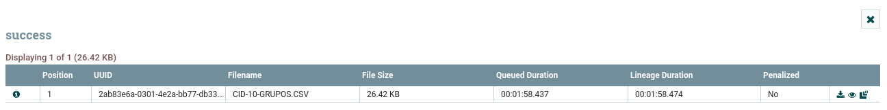
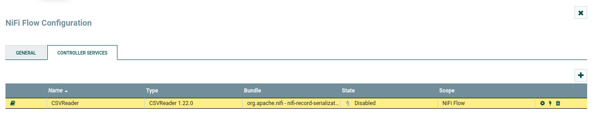
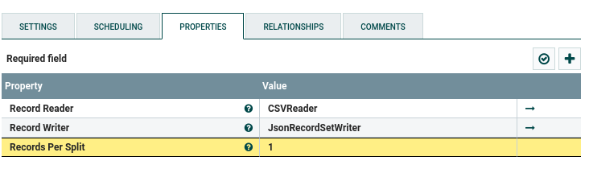

Apache Nifi
Construindo o Fluxo
Os dados utilizados no exemplo vêm de duas fontes:
- Arquivo de dados sobre os CIDs [1], disponível na pasta data, da raiz do repositório.
- Dados sobre a mortalidade, em 2020 [2]
Fluxo para os dados de CID
Extract
Para o arquivo, utilizamos o processador GetFile do Apache Nifi, com a seguinte configuração:

- O Input Directory contém o caminho relativo a pasta
/opt/nifi/nifi-current/data-indo container, observe que a pastadata-inestá em um bind com a pasta local: data, por meio da configuração nodocker-compose:
O filtro por nome foi inserido para que o processador não recupere outros arquivos da pasta. Durante o período de testes recomenda-se utilizar a propriedade "Keep Source File" como
true, para que o arquivo original não seja deletado após o processamento.
O processador GetFile tem uma saída possível, presente na aba "Relationships", e ficará no estado inválido até que as saídas sejam tratadas.

Como a saída desse processador será o arquivo CSV lido, o próximo processador será responsável por fazer a leitura
desse arquivo CSV e separá-lo em arquivos contendo apenas um registro, já no formato JSON. Para isso, o processador *
SplitRecord* será utilizado, para ligar os dois processadores basta passar o mouse por cima do primeiro e quando a
seta representada na figura abaixo aparecer, arrastar o mouse até o segundo processador.

A seguir, será solicitada a configuração da conexão, onde a saída em caso de sucess do primeiro processador
(GetFile) será direcionada para o processador SplitRecord.

Nesse momento será criada uma fila (queue) entre os processadores, onde será possível acompanhar o estado do fluxo de dados.

Observe que o processador GetFile agora está no estado válido, mas ainda não foi iniciado, e o processador * SplitRecord* está no estado inválido.
Para verificar o funcionamento do processador GetFile ele será executado apenas uma vez, para isso clique com o botão direito do mouse sobre o processador e selecione a opção Run Once:

Após a execução, o arquivo lido (1 arquivo de 26.42 KB) entrará para a fila, aguardando a entrada no próximo processador:

É possível verificar os arquivos na fila selecionando a opção List Queue da fila:


Transform
O processador SplitRecord contém a primeira etapa da transformação dos dados, a transformação de CSV para JSON,
para isso ele utilizará dois serviços, um de leitura CSV e outro de escrita JSON. Esses serviços devem ser configurados
de forma global para o fluxo, para isso clique em um espaço vazio do fluxo e selecione a opção Configure.

Na aba controller services selecione a opção para adicionar um novo serviço, e busque por CSVReader.

Clique no ícone de engrenagem para configurar o leitor e nas propriedades altere as seguintes configurações:
| Configuração | Valor | Descrição |
|---|---|---|
| Schema Access Strategy | Use Strings Fields From Header | Determina como os nomes das propriedades serão determinados. |
| Value Separator | ; | Separador de registros, no caso do arquivo usado é ';'. |
| Treat First Line as Header | true | Auto explicativo. |
Para ativar o serviço, clique no ícone de raio e no botão "Enable" da tela que aparecer.
Repita os passos anteriores para adicionar os serviços de leitura e escrita em JSON: JsonRecordSetWriter e JsonTreeReader. Não é necessário alterar nenhuma configuração.
Agora que os serviços de leitura e escrita estão criados e habilitados, é possível inseri-los na configuração do SplitRecord.

O processador SplitRecord tem 3 saídas possíveis, e é necessário direcioná-las ou configurá-las como finais, na aba relationships.

A saída splits será direcionada para o próximo processador, para o tratamento dos dados por meio de um script python, o ExecuteScript.
Configure o processador da seguinte maneira:
Observe que a pasta scripts está em um bind com a pasta /opt/nifi/nifi-current/scripts do container, por meio da configuração do docker-compose. O script cid10_format_json.py é responsável pelo seguinte processamento:
| format_json.python | |
|---|---|
Após o processamento, cada arquivo encontra-se no seguinte estado, estando pronto para a inserção na base de dados.

O processador responsável pela conversão de JSON para SQL é o ConvertJSONtoSQL, como o próprio nome sugere, que necessita de uma JDBC Connection Pool para funcionar, portanto é necessário criá-la junto com os serviços de leitura e escrito criados anteriormente.

A senha para o usuário apache também deve ser inserida, não aparecendo na imagem por ser um dado sensível. O usuário apache também deve ser criado no banco de dados, caso não existe, e ter acesso aos objetos da base
sim_datasus.
Uma vez criada a pool de conexões, basta configurar o processador da seguinte maneira:

Load
Por fim, a inserção dos dados é feita com auxílio do processador ExecuteSQL, que irá executar os arquivos sql gerados pelo processador anterior. Basta configurar a connection pool e os relationships como terminais.
Quantidade de tuplas antes da inserção:
Após a inserção:

Overview
Fluxo completo:

Referências
[1] Arquivos em Formato CSV - CID-10, disponível em http://www2.datasus.gov.br/cid10/V2008/descrcsv.htm. Acesso em 12 de junho de 2023.
[2] Sistema de Informação sobre Mortalidade – SIM, disponível em https://opendatasus.saude.gov.br/dataset/sim. Acesso em 12 de junho de 2023.
[3] Exemplo de Script Jython, disponível em https://gist.github.com/ijokarumawak/1df6d34cd1b2861eb6b7432ee7245ccd
[4] https://www.youtube.com/watch?v=cHElJ8M5g0Y&ab_channel=InsightByte